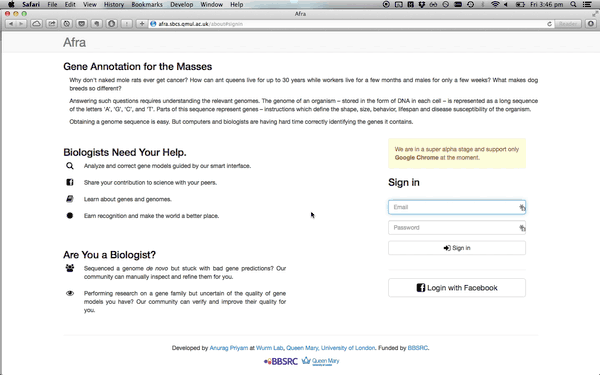
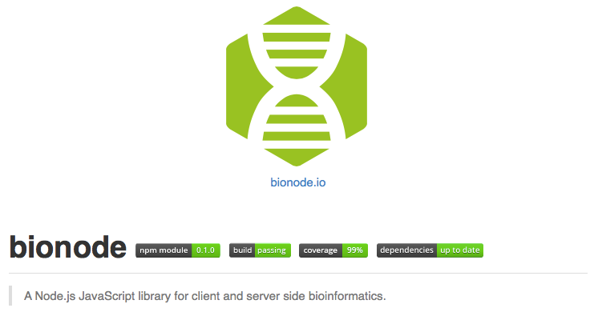

Crowdsourcing Genome Annotation
Bruno Vieira | @bmpvieira
Queen Mary, University of London
What is genome annotation?
Demo

Afra
Web App to Crowdsource/Gamify Genome Annotation
Open Source

Anurag Priyam
WebApollo

Software Stack

Bionode

Gamify
- Scores
- Open Badges
- Certificates of Expertise
Machine Learning
Use data generated by users to improve gene prediction models
Thanks! Questions?
 Bruno Vieira
@bmpvieira
Bruno Vieira
@bmpvieira
 Anurag Priyam
@yeban
Anurag Priyam
@yeban
 Yannick Wurm
@yannick__
Yannick Wurm
@yannick__
© 2014 Bruno Vieira CC-BY 4.0